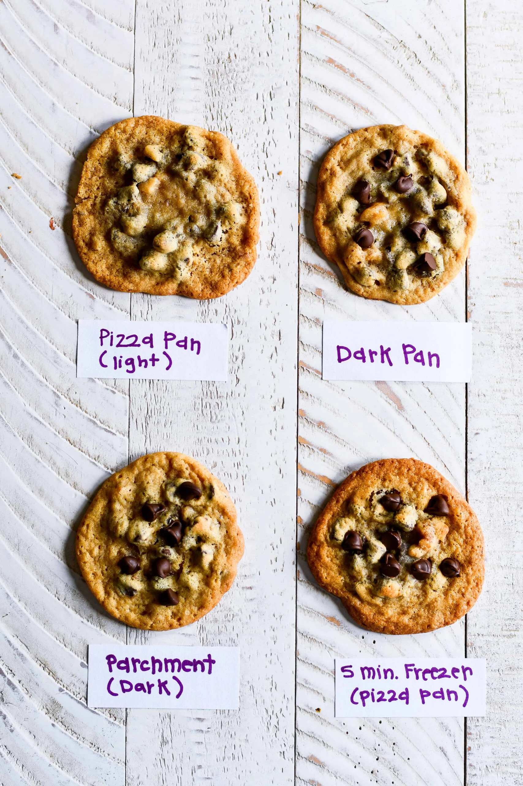

Given the last research page of mine, I could perhaps reference the original tollhouse cookie recipe.
Sourced from Wikipedia.
Including derivations in the "Common variations" section of the wikipedia could be interesting, as well as links to websites that redirect to those recipes.
I also plan to include an introduction talking about the post-WWII trivia of the Chocolate Chip Cookie like how a lot of websites have intros before getting to recipe, then proceeding to transition with 'here's how you can make them yourself' or such.
"Troubleshooting/FAQ Section for possible mishaps with the baking
first image
second image after the intro paragraph is done

put this image in after you listed the ingredients as mentioned above

add this image in before you write about troubleshooting potential errors
final image